I start by scanning all ports to identify available services:
nmap -sVC -p- --open -sS --min-rate 5000 -v -n -Pn -oN lantern_scan 10.10.11.29The scan redirects us to a web page:
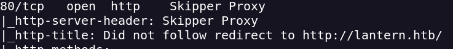
I add the domain to /etc/hosts:
nano /etc/hostsAt first glance, nothing interesting is visible. Subdomain enumeration fails. The server uses Blazor (.NET), so it may have DLL files.
A POST request exists at /vacancies, possibly vulnerable to SSRF. It only accepts PDFs.
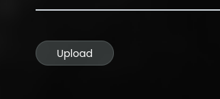
The server is vulnerable via X-Skipper-Proxy:
X-Skipper-Proxy v0.13.237 - Server Side Request Forgery (SSRF)
This allows reading local files on the server.
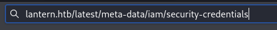
Using Burp Suite, I intercept the GET request and modify it to perform SSRF.
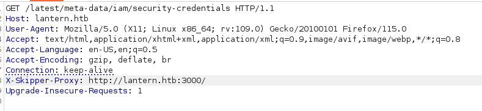
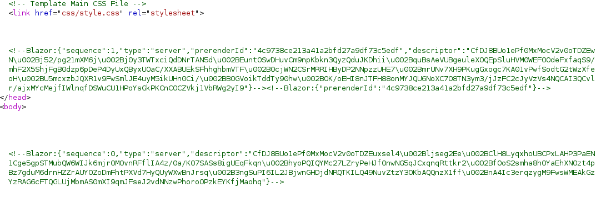
I use FFUF to enumerate internal ports:
ffuf -u http://lantern.htb/ -H "X-Skipper-Proxy: http://localhost:FUZZ" -w /usr/share/seclists/Discovery/Infrastructure/common-http-ports.txt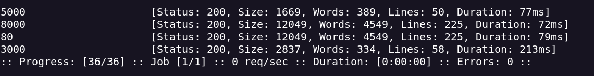
I focus on port 5000 and continue exploiting internal services:
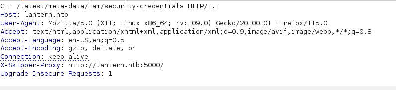
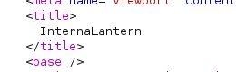
A script is discovered that references a .json containing credentials:
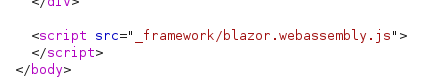
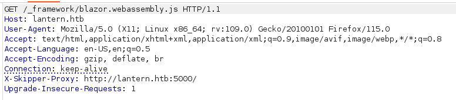
Redirecting the SSRF reveals multiple DLL files. The relevant file is InternaLantern.dll:
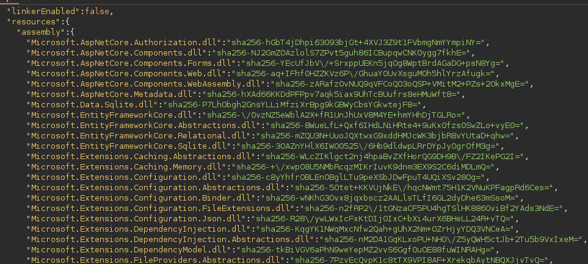
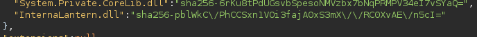
I download the DLL using the exact filename:
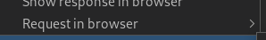
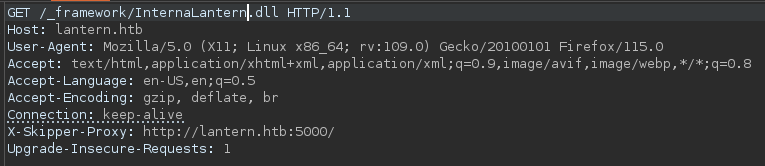
The file is saved locally:
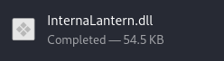
Using dotPeek (a .NET decompiler), I extract credentials encoded in Base64:
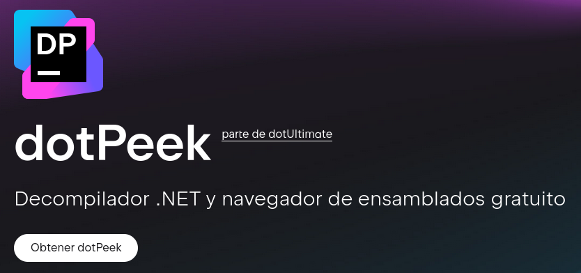
Decoding gives us the user and password:
admin:AJbFA_Q@925p9ap#22These credentials are used to log into the panel on port 3000:
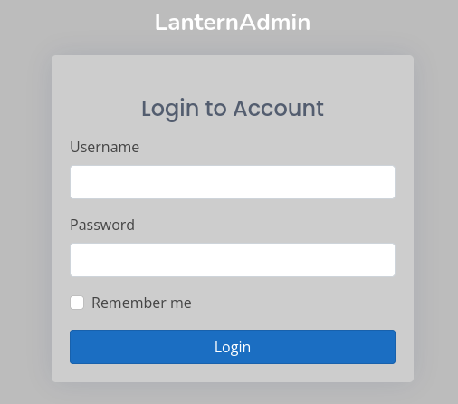
I explore file upload sections and local files through /PrivacyAndPolicy, which allows an LFI:
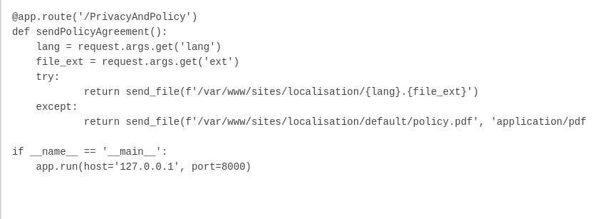
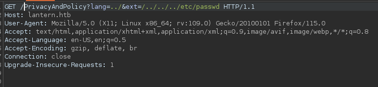
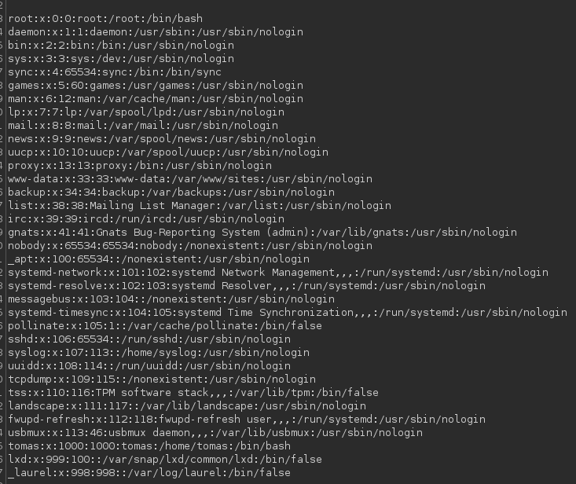
This reveals the user tomas.
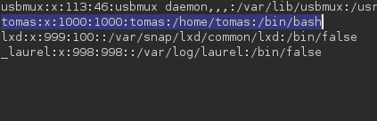
Investigating file uploads, I find a vulnerable DLL module (FileUpload.dll) that allows writing files to /opt/components.
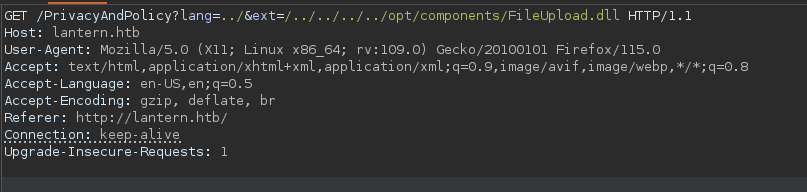
I create and modify a DLL to read tomas' id_rsa:
str1 = new StreamReader((Stream) new MemoryStream(File.ReadAllBytes("/home/tomas/.ssh/id_rsa")), Encoding.UTF8, true).ReadToEnd();Uploading and intercepting the request returns the SSH key. I connect via SSH:
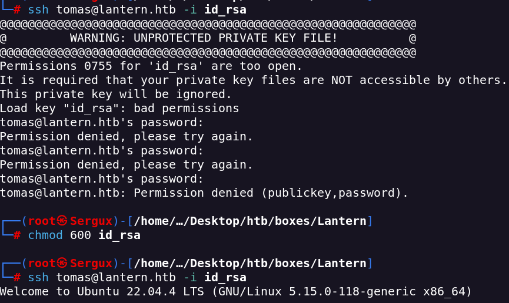
I retrieve user.txt:
Running sudo -l shows a command that can be executed as root:
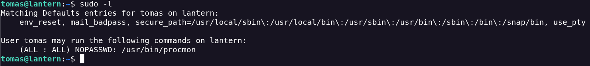
Using ps aux | grep root, I identify running root processes:
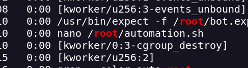
One process runs automation.sh. I monitor it with procmon:
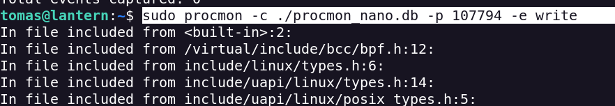
After stopping capture (CTRL+C), I find a SQLite database containing the root password:
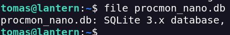
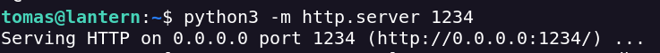
Using this password, I log in as root and obtain root.txt.